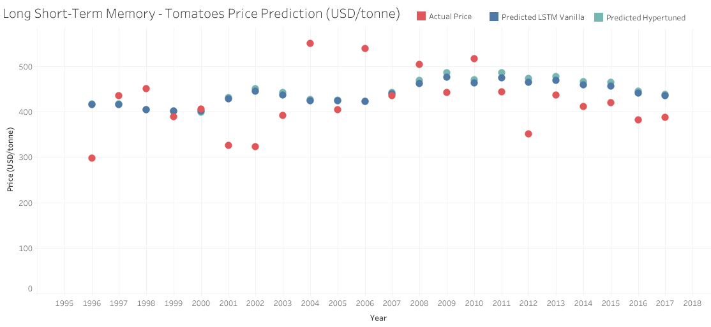

Background
Based on past prices, we would like to predict whether prices will be going up or going down. In this project, we chose the prices of Tomatoes reported by Mexico to the FAO from 1991 to 2017. Since we only had 27 observations, other algorithms rather than ARIMA had to be explored.
We found that Recurrent neural networks (RNNs), one of the deep learning techniques implemented in TensorFlow, are a powerful and robust type of neural network that have an internal memory or state, able to remember important things about the input received and are thus able to predict upcoming events, and that are used for sequential data like time series or autocompletion of sentences. An extension of RNNs are Long Short-Term Memory (LSTM) networks, which are well suited to learn from important experiences that have very long-time lags in between. They are explicitly designed to avoid the long-term dependency problem.
LSTM explained
LSTM networks include memory states that determine what information should be propagated further at each timestep. The LSTM cell looks as follows:
Here is what happens at every given timestep, t:
is the output gate, which determines what exactly is important for the current prediction and what information should be kept around for the future.
is called the input gate and determines how much we concern ourselves about the current vector (cell).
is the value for the new memory cell.
is the forget gate, which determines how much to forget from the current vector (if the forget gate is 0, we are entirely forgetting the past).
All four have the same equation insight (with its corresponding weights), but uses tanh and the others use sigmoid. Finally, we have the final memory cell and final hidden state .
The final memory cell separates the input and forget gate, and decides how much of the previous output should be kept and how much of the current output should be propagated forward (in simple terms, this means: forget the past or not, take the input or not). The final hidden state decides whether to expose the content of the cell at this particular timestep.
Since some of the information from the current cell may be omitted in , we are passing forward to be used in the next timesteps.
This same system is repeated multiple times through the neural network. Often, it is the case that several LSTM cells are stacked together and use shared weights and biases.
Implementation
The dataset was divided into training (90%) and testing (10%). For the training dataset, X[0] was formed by a sequence of five prices, from 1991 to 1995, and Y was the price in the sixth position (1996), X[1] was formed by a sequence of five prices, from 1992 to 1996, and Y was the price in the seventh position and so on, until the 90% of the original sequence (27 prices of tomatoes reported by Mexico to the FAO from 1991 to 2017) was processed. For the testing dataset, X[0] was formed by a sequence of five prices, from 2008 to 2012, and Y was the price in the eighteenth position (2013), X[1] was formed by a sequence of five prices, from 2009 to 2013, and Y was the price in the nineteenth position and so on, until the last 10% of the original sequence was processed.
We tried different options of LSTM models using Keras Deep Learning Models with Scikit-Learn in Python: A simple model (Vanilla) with the Keras regressor, a Hyper tuned model using GridSearchCV, a simple Bidirectional model, a Bidirectional model with more layers and the Keras regressor, and a Hyper tuned Bidirectional model using GridSearchCV.
Because of the way in which the original sequence was treated, we had predicted values from 1996 to 2017.
Results
The performance of all models was very similar, on average the Hyper tuned Bidirectional model using GridSearchCV was better, because the difference between the actual and the predicted values was smaller. In the following images, we can see the main differences:
2000 and 2007 were the years in which the model predictions were closer to the actual values.
2002 and 2004 were the years in which the model predictions were further from the actual values.
Although the predictions between the simple and the Hyper tuned model are very similar for most of the years, in 2008 and 2010 the Hyper tuned model predictions were closer to the actual values.
Again, 2002 and 2004 were the years in which the model predictions were further from the actual values. We can see that 2004 was the year with the highest price and 2002 is one of the years with lower prices.

In this type of model, where the sequence is analyzed in both directions, the predicted value for the year 2000 remained closer to the actual value, but we saw a change in the years were the predicted values were further from the actual values (2004 and 2012).
On average, adding more layers had the unwanted effect of incremeting the differences between the actual and the predicted values.
However after the hyper tuning, the Bidirectional model with more layers performed better than the previous models, on average.
In ten years (2001, 2002, 2009, 2011-2017), the predicted values were closer to the actual values.
Explore the results
Further analysis
See the code >> here
The models can be changed to predict more than one value, in order to used them for price forecasting. You will need to modify the code for the Y values to send more than one output value to the model and specify, in the layer Dense, the corresponding number of output values.
References
Mastering Python for Finance - Second Edition, by James Ma Weiming, Publisher: Packt Publishing, Release Date: April 2019, ISBN: 9781789346466.
Recurrent Neural Networks with Python Quick Start Guide, by Simeon Kostadinov, Publisher: Packt Publishing, Release Date: November 2018, ISBN: 9781789132335.
Hands-On Deep Learning with TensorFlow 2.0, by Akshat Gupta, Ekta Saraogi, Published by Packt Publishing 2019.